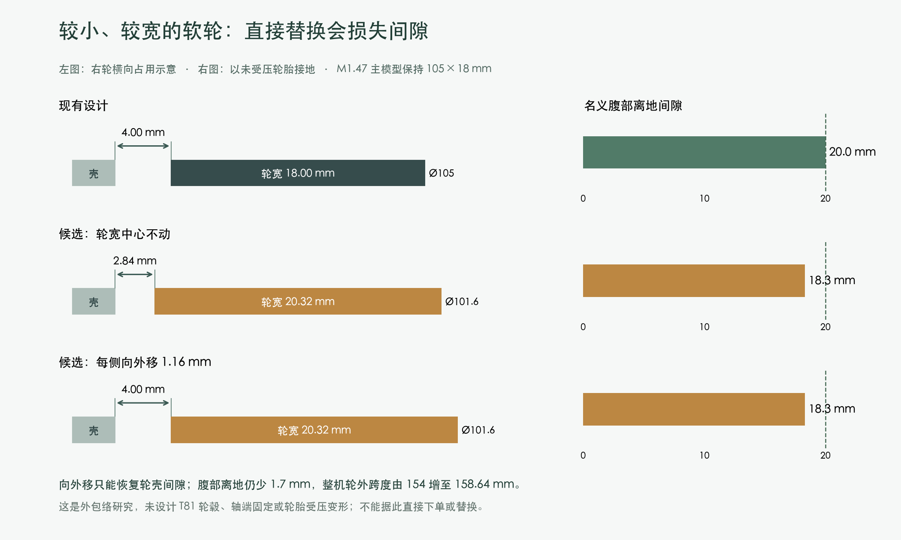

返回产品筛选 · 打样前工作
最近尺寸候选还不能直接替换
研究对象为 BaneBots T81P-406BB 官方尺寸：4 × 0.8 in，换算101.6 × 20.32 mm。它是成品轮；T81圆＋方中心和卡簧接口不同于当前双D轮毂。下列数据是原主模型与目录外包络的计算，不是实测。

| 方案 | 轮径×轮宽/mm | 轮壳最小间隙/mm | 腹部离地/mm | 双轮外侧跨度/mm | 结论 |
|---|
| 现有设计 | 105 × 18 | 4.00 | 20.0 | 154.00 | 保留当前设计 |
| 候选：轮宽中心不动 | 101.6 × 20.32 | 2.84 | 18.3 | 156.32 | 轮壳间隙与20 mm离地目标均不满足 |
| 候选：每侧向外移 1.16 mm | 101.6 × 20.32 | 4.00 | 18.3 | 158.64 | 恢复轮壳间隙；离地与轴端接口仍待处理 |
已检查的范围
对当前209件装配中的身体外壳和下部结构，以512边外包圆柱检查候选轮胎的整体旋转占用；最大径向多包约0.001 mm。六类邻近结构的实体未与该外包络相交。原轮胎、轮毂、轮轴、隔圈及轴端锁紧共14件从接口适配判断中剔除，明确保留为待设计项；共用电机底盖的螺钉和螺母仍参与检查。
130个组合头部姿态的包围盒与轮胎保持分离。前后倾斜−15°至+15°的31个离散位置中，候选最低离地约16.98 mm，现有约18.68 mm，最低处均为下壳。该检查只表示给定几何未触地，不是平衡、稳定性或断电站立验证。
采用前仍要处理
- 取得匹配T81轮毂的完整尺寸、公差、轴端锁紧及装配资料，才能形成可安装的方案。
- 若采用该轮径，需处理减少的1.7 mm离地间隙，再检查轴承、电机、底盖和电池相关接口；本研究未移动这些部件。
- 轮胎受压半径、跳动、工作范围及重量范围仍未确认。厂家成品轮约90.7 g与现有“仅胎圈”估重不可直接相减。
- 国内可交付渠道和含运价仍未确认；轮径及轮毂结构变化须先提交用户审阅。
逐项计算结果 · 可重复运行脚本 · 实际运行记录 · 矢量图
PROTOTYPE / UNVALIDATED。外形筛查完成，完整替换方案 BLOCKED。
主模型SHA256：bcaa5736a8cdf43441a6a83a6cb69606546cc01d2c0d28d98f4c09383e07368f